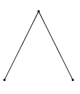
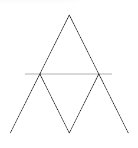

Savez-vous construire des châteaux de cartes. Avec un étage, c'est très simple :

Avec deux étages, ce n'est pas beaucoup plus compliqué :

Mais alors, avec un jeu de 52 cartes, combien d'étages au maximum peut comporter un château de cartes?
Remarquons que tout nouvel étage comporte 3 cartes de plus que l'étage précédent. En partant du haut on a donc :
1er étage : 2 cartes
2ème étage : 2+3=5 cartes, soit 7 cartes en tout
3ème étage : 5+3=8 cartes, soit 15 cartes en tout
4ème étage : 8+3=11 cartes, soit 26 cartes en tout
5ème étage : 11+3=14 cartes, soit 40 cartes en tout
6ème étage : 14+3=17 cartes, soit 57 cartes en tout, c'est trop!
On ne pourra construire qu'un château de cartes ayant au maximum 5 étages!
Les vacances
Petit Pierre raconte ses vacances : « Il y a eu 11 jours de pluie ; pendant ces 11 jours, quand il pleuvait
le matin, il faisait beau l'après-midi et s'il pleuvait l'après-midi, il
avait fait beau le matin. »
Au total, ce petit garçon a eu 9 matinées et 12 après-midi sans pluie.
Peux-tu trouver combien de jours de vacances a eu ce petit garçon ?
Il y a autant de matinées et d'après-midi que de jours de vacances. Ainsi, il y a 9+12 = 21 demi-journées sans pluie.
Il y a 11 demi-journées avec pluie ; donc 21+11 = 32 demi-journées au total, soit 16 jours de vacances.
L'horloge électronique
Mon horloge numérique affiche en permanence 4 chiffres : deux pour les heures, et deux pour les minutes.
Durant combien de temps (en minutes) apparaissent chacun des dix chiffres de 0 à 9 durant une journée normale de 24 heures ?
Énigme postée sur le forum par Freddy
Pour le 0 : il apparait en première position pendant 10 heures, soit 600 minutes, et en deuxième position pendant 3 heures, soit 180 minutes, en troisième position pendant 10×24 minutes (10 minutes pendant chaque heure), en quatrième position pendant 6×24 minutes, soit au total 1164 minutes.
Pour le 1, le calcul est identique : 1164 minutes.
Pour le 2 : il ne peut plus apparaitre en première position que pendant 4 heures, le reste du calcul est inchangé, soit un total de 804 minutes.
Pour le 3 : il n'apparait plus jamais en première position, le reste du calcul est inchangé. On obtient 564 minutes.
Pour le 4 et le 5 : il n'apparaissent plus jamais en première position, et en deuxième position seulement pendant deux heures. Le
reste du calcul est inchangé. On obtient 504 minutes.
Pour le 6, le 7, le 8 et le 9, on ne peut plus apparaitre comme troisième chiffre. Le total est donc 120+144=264 minutes.
Les poignées de mains
Quelle formidable soirée! Tout le monde repart ravi, en couple. Avec tous ses départs, 112 poignées de mains sont échangées.
Mais combien y-avait-il de personnes dans cette soirée?
Notons $n=2p$ le nombre de participants à la soirée, $p$ étant donc le nombre de couples. Il y a $\frac{n(n-1)}2$ paires de deux personnes, et donc "virtuellement" $\frac{n(n-1)}2$ poignées de main échangées. Mais on peut supposer que les deux membres d'un couple ne se serrent pas la main en partant, et donc le nombre de poignées de main échangées est :
$$\frac{n(n-1)}2-p=\frac{n(n-1)}2-\frac n2.$$
Ainsi, $n$ est solution de l'équation
$$\frac{n(n-1)}2-\frac n2=112\iff n^2-2n=224.$$
Les solutions de cette équation sont $n=16$ et $n=-14$. La seule solution acceptable est $n=16$. Il y avait donc 16 personnes à cette soirée.
Les poignées de mains
Rachel et Bastien ont invité 49 couples à leur mariage.
A la fin de la soirée, Bastien demande à chaque personne invitée et à sa femme, à combien de personnes différentes elles ont serré la main. Il s’avère que chaque personne interrogée répond un nombre différent !
Sachant que personne ne serre la main de son conjoint, ni sa propre main, combien de mains a serré le marié ?
Enigme publiée par Boody sur le forum
Voici la solution proposée par amatheur sur le forum. Bastien a interrogé 99 personnes. Lui-même et ces 99 personnes n'ont pu serrer la main que de 98 personnes au maximum.
Comme il y avait 99 réponses différentes, alors le nombre des mains serrées par chacune des personnes interrogées prenait toutes les valeurs de 0 à 98 (du plus froid au plus chaleureux) sans répétition.
Considérons la personne la plus chaleureuse (qui a serré la main de 98 personnes) puisqu'elle ne peut serrer ni sa main ni celle de son conjoint ni la main de la personne la plus froide, alors son conjoint est nécessairement la personne la plus froide (sinon il n'aurait serré la main que de 97 personnes).
Prenons maintenant le cas de la personne qui a serré la main de 97 personnes, comme elle ne peut serrer ni sa main, ni celle de son conjoint ni de la plus froide ni de la personne qui a serré la main à une seule personne ( puisque celle-ci a déjà serré la main de la personne la plus chaleureuse), donc le conjoint de la personne qui a serré la main de 97 personnes est nécessairement celle qui n'a serré la main que d'une seule personne.
On peut continuer le raisonnement ainsi. La personne qui a serré la main de 96 personnes est le conjoint de la personne qui a serré la main de 2 personnes, etc ... Finalement, la personne qui a serré la main de 50 personnes est forcément le conjoint de la personne qui a serré la main de 48 personnes. Ce faisant, il reste la personne qui a serré la main de 49
personnes. C'est forcément la mariée et son conjoint Bastien a lui même serré la main de 49 personnes